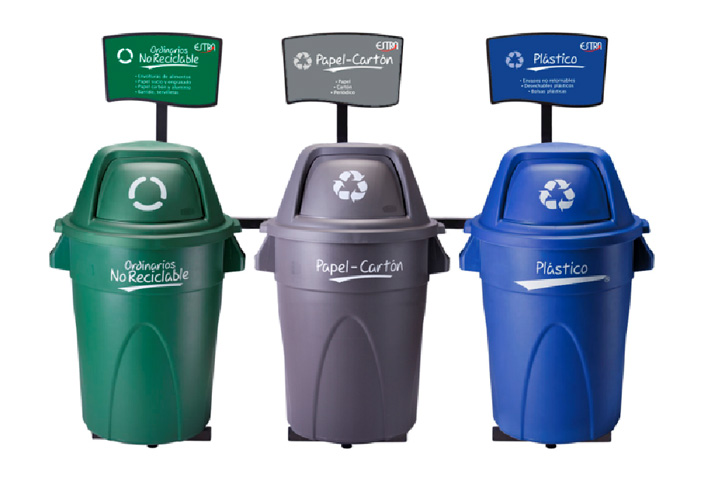

En este espacio te diremos nuestras propuestas para mejorar el medio ambiente
desde tu casa y/o oficina. Y esperamos incentivarte a ayudar no solo a nosotros,
sino a todo el planeta.
Las 3R
Esta regla está formada por: reducir, reutilizar y reciclar.
Esta regla sirve para tener un mundo sano y limpio sin embargo algunas personas no la respetan por que dicen
"ay… que tanto es tirar basura en la calle" o "yo no reciclo, pero otras personas si" en realidad todos deberían decir:
"hay que recoger la basura y a reciclarla" o "hay que reciclar la basura para tener un planeta más limpio o simplemente:
"¡Cuida el planeta!."
Manejo De Residuos
La temática “manejo adecuado de residuos sólidos y procesos de reciclaje”
busca generar una conciencia de reducción y consumo responsable, mostrando que la elevada generación de residuos sólidos,
comúnmente conocidos como basura y su manejo inadecuado son uno de los grandes problemas ambientales y de salud,
los cuales se han acentuado en los últimos años debido al aumento de la población y a los patrones de producción y consumo,
mostrando algunas alternativas y usos que se pueden dar a materiales que comúnmente son desechados como “basura”.

!Ecotips Para El Manejo De Los Residuos¡
1. Lleva contigo una bolsa de tela para que no utilices bolsas de plástico cuando hagas compras.
2. Convierte tu basura orgánica en composta.
3. Separa tus residuos al menos en orgánicos e inorgánicos y si es posible en reciclables
(papel, aluminio, vidrio, cartón, tetrapack, etc).
4. Usa las hojas de papel por ambos lados.
5. Utiliza pilas recargables.
6. Localiza centros de acopio que compren materiales reciclables.
7. Para los residuos infecciosos o de riesgo biologico estos deben ir en una bolsa plastica de color rojo, en los puntos ecologicos estos van en la caneca del mismo color y se clasifican en: hospitalarios, sanitarios y quimicos tales como medicamentos.